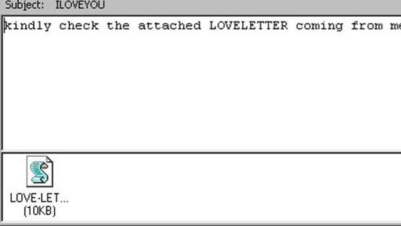

1. Gusano Morris (1988)
Uno de las primeros y más peligrosos virus de la historia de informática, que llegó, además, cuando la ciberseguridad todavía se encontraba en pañales. En noviembre de 1988, momento de su activación, internet todavía estaba lejos de ser ese campo fértil y recurrente que es a día de hoy. Sin embargo, bastó para infectar cerca del 10% de los 60.000 ordenadores con conexión que existían. Incluso llegó a dar problemas al mismísimo Centro de Investigación de la Nasa y al Pentágono.
El malware ralentizaba enormemente los equipos en los que se alojaba, además de crear procesos y archivos en carpetas temporales. Su creador, llamado Robert Tappan Morris, por entonces era un joven estudiante de la Universidad de Cornell. Fue condenado en 1990 a pagar más de 100.000 dólares y a realizar 400 horas de servicios comunitarios. Tras hacer fortuna en internet gracias a diversos proyectos, actualmente se dedica a la docencia como profesor asociado en el prestigioso Instituto Tecnológico de Massachusetts (MIT).
2. CIH/Chernobyl (1998)
Si el Gusano Morris había logrado sacudir el incipiente internet de finales de los ochenta, Chernobyl supuso su perfecto relevo diez años después, cuando la red ya se encontraba en auge. Su nombre se debe al día en que fue activado: el 26 de abril, el mismo en que tuvo lugar la archiconocida hecatombe nuclear en Rusia. El CIH, programado por un estudiante de la Universidad de Taipéi llamado Chen Ing Hau, formateaba el disco duro de los equipos borrando toda la información almacenada. Al mismo tiempo, acababa con el contenido de la BIOS (lo que provocaba que el ordenador no pudiese arrancar) e infectaba los ficheros ejecutables en los sistemas con Windows 95 y Windows 98.
El objetivo del creador, según precisó, era el de demostrar la vulnerabilidad de los antivirus de la época. Cosa que consiguió dañando 60.000 ordenadores en todo el mundo y provocando pérdidas millonarias.
3. Melissa (1999)

Tan solo un año después de la aparición de Chernobyl, el mundo de la ciberseguridad tuvo que lidiar con una nueva amenaza: Melissa. Este virus empleaba técnicas de ingeniería social con el fin de engañar al usuario. Llegaba por correo electrónico, y en el asunto se podía leer «Aquí está el documento que me pediste… no se lo enseñes a nadie». Una vez se abría el mensaje, este se reenviaba a los 50 primeros contactos que encontrase en la cuenta del afectado.
Melissa provocó enormes perdidas económicas, se calcula que se encuentran alrededor de los 80 millones. Su creador, David L. Smith, corrió menos suerte que los dos anteriores. A pesar de mostrar arrepentimiento, no consiguió eludir la pena de prisión. Tras pasar 20 meses entre rejas comenzó a colaborar con el FBI con el fin de encontrar al creador del virus Anna Kournikova.
4. I love you (2000)

De lejos, el virus más conocido de nuestra historia reciente. Y es que ahora todos estamos acostumbrados a ignorar cualquier correo electrónico con cierta apariencia de sugerencia sexual, pero hace 17 años la cosa era muy distinta, con lo que el envío de una aparente carta de amor no hizo sospechar a casi nadie.
¿El resultado? El virus I love you, que eliminaba todos los archivos jpg del ordenador, afectó a más de 50 millones de usuarios y generó unas pérdidas aproximadas de 5.500 millones de dólares. Y los ‘ingenuos’ no solo fueron los usuarios corrientes y molientes: grandes instituciones como el Parlamento Británico o el mismísimo Pentágono también sucumbieron a I love you.
5. Mydoom (2004)
Una de las mayores pesadillas de nuestra historia reciente. Mydoom inutilizaba gran parte de las herramientas de seguridad de Windows, con lo que era capaz de moverse a sus anchas por todo el sistema operativo y el ordenador del usuario infectado. La histeria llegó hasta tal punto que Microsoft llegó a ofrecer 250.000 dólares a quien encontrase al responsable de este ataque informático.
Mydoom es uno de los virus que se ha propagado más rápidamente: durante su época de mayor actividad, redujo hasta en un 10% el tráfico global en internet. Hasta su eliminación, este virus generó unos daños cercanos a los 40.000 millones de dólares, según las estimaciones llevadas a cabo en aquella época.
7. WannaCry (2017)
El último gran ataque masivo de la historia de la informática. Este virus, presuntamente de origen norcoreano, puso en jaque a empresas de todo el mundo, entre ellas Telefónica. La compañía española de comunicación se vio obligada a solicitar a sus empleados que apagasen sus ordenadores para evitar que el problema se propagase.
WannaCry se dedicaba a encriptar los datos que encontraba en los sistemas que infectaba provocando que fuesen inaccesibles para el usuario. Más tarde, se solicitaba un rescate de 300 dólares a cambio de las claves necesarias para recuperar el control del ordenador. Causó unas pérdidas cercanas a los 200 millones de euros.
Otros virus